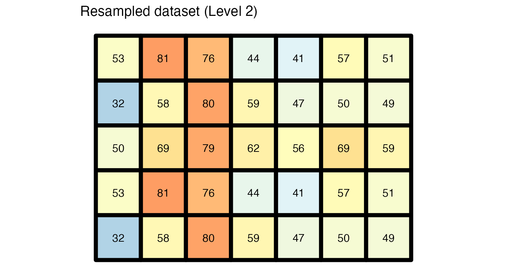
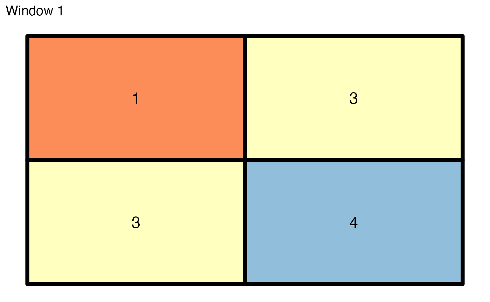
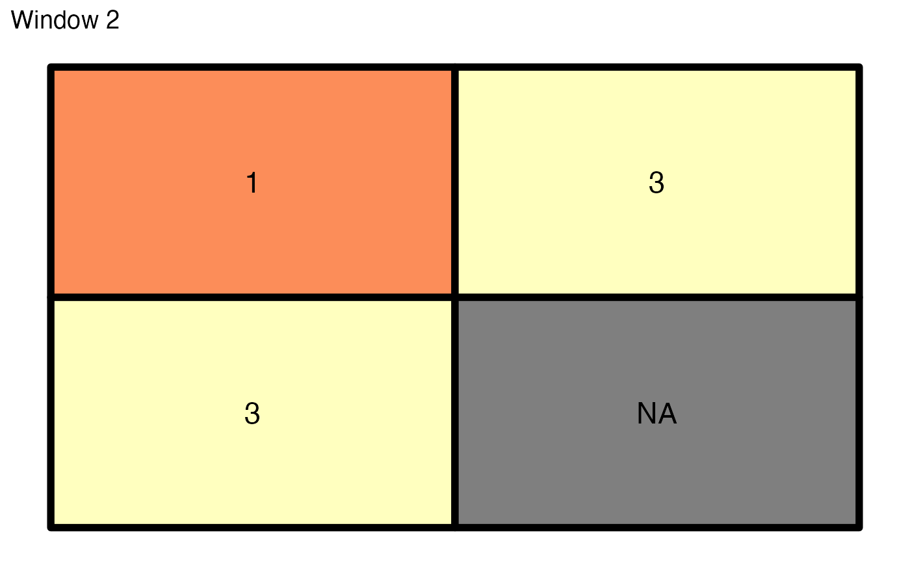
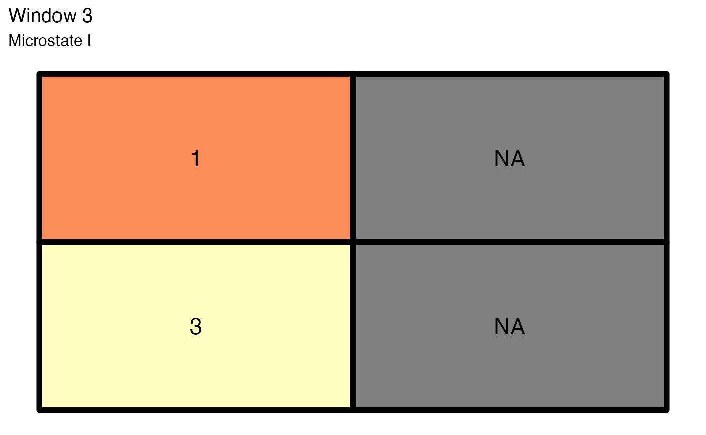
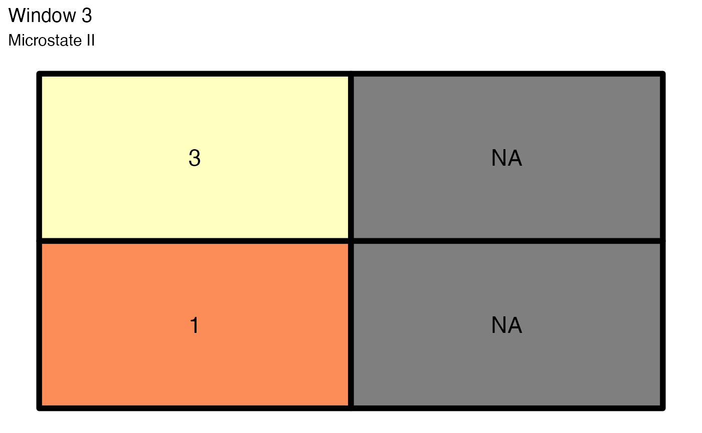

belg: Boltzmann Entropy of a Landscape Gradient
Jakub Nowosad
2020-04-21
Source:vignettes/belg1.Rmd
belg1.RmdBoltzmann entropy (also called configurational entropy) has been recently adopted to analyze entropy of landscape gradients (Gao et al. (2017), Gao et al. (2018)). The goal of belg is to provide an efficient C++ implementation of this method in R. It also extend the original idea by allowing calculations on data with missing values.
Basic example
Let’s take two small rasters - complex_land representing a complex landscape and simple_land representing a simple landscape.
The main function in this package, get_boltzmann(), calculates the Boltzmann entropy of a landscape gradient:
get_boltzmann(complex_land, method = "hierarchy") #> [1] 191.1567 get_boltzmann(simple_land, method = "hierarchy") #> [1] 104.8581
The results, unsurprisingly, showed that the complex landscape has a larger value of the Boltzmann entropy than the simple one.
The get_boltzmann() function accepts a RasterLayer, RasterStack, RasterBrick, matrix, or array object as an input. As a default, it uses a logarithm of base 10 (log10), however log and log2 are also available options for the base argument.
get_boltzmann(complex_land, method = "hierarchy") # log10 #> [1] 191.1567 get_boltzmann(complex_land, method = "hierarchy", base = "log") #> [1] 440.1546 get_boltzmann(complex_land, method = "hierarchy", base = "log2") #> [1] 635.0089
It also allows for calculation of the relative (the relative argument equal to TRUE) and absolute Boltzmann entropy of a landscape gradient.
Relative Boltzmann entropy of a landscape gradient
The main idea behind the Boltzmann entropy of a landscape gradient is to calculate an entropy in a sliding window of 2 x 2 pixels. The relative configurational entropy is a sum of entropies for all windows of the original data.
get_boltzmann(complex_land, method = "hierarchy", relative = TRUE) #> [1] 88.55451
Absolute Boltzmann entropy of a landscape gradient
It is possible to calculate an average value for each sliding window of 2 x 2 pixels and therefore create a resampled version of the original dataset:

The absolute configurational entropy is a sum of relative configurational entropies for all levels, starting from the original data to the resampled dataset with at least two rows or columns.
get_boltzmann(complex_land, method = "hierarchy", relative = FALSE) #> [1] 191.1567
Calculation of the configurational entropy in a sliding window
Determining the number of microstates belonging to a defined macrostate in a crucial concept for calculation of the configurational entropy. We explore this topic using five different cases of 2 x 2 windows:
win_1 = raster(matrix(c(1, 3, 3, 4), ncol = 2)) win_2 = raster(matrix(c(1, 3, 3, NA), ncol = 2)) win_3 = raster(matrix(c(1, 3, NA, NA), ncol = 2)) win_4 = raster(matrix(c(1, NA, NA, NA), ncol = 2)) win_5 = raster(matrix(c(NA, NA, NA, NA), ncol = 2))
Data without missing values
The configurational entropy for data without missing values is calculated using the analytical method by Gao et al. (2018).

Twenty-four different microstate are possible in the above case. The common (base 10) logarithm of 24 is equal to 1.380211. We can compare this result to the get_boltzmann() output:
get_boltzmann(win_1, method = "hierarchy") #> [1] 1.380211
The generalized (resampled) version of this window has one value, 3, which is a rounded average of the four original values.
Data with missing values
The papers of Gao et al. (2017, 2018) only considered data without missing values. However, the belg package provides a modification allowing for calculation also for data with missing values. Cells with NA are not considered when calculating microstates.

For example, three microstates are possible for the above case:
The common (base 10) logarithm of 3 is equal to 0.477121.
get_boltzmann(win_2, method = "hierarchy") #> [1] 0.4771213
The generalized (resampled) version of this window is 2.

The third window has two combinations. The common logarithm of 2 is equal to 0.30103.
get_boltzmann(win_3, method = "hierarchy") #> [1] 0.30103
The generalized (resampled) version of this window is also 2.
The fourth window has only one microstate, therefore its common logarithm equals to 0.
get_boltzmann(win_4, method = "hierarchy") #> [1] 0
The generalized (resampled) version of this window is the same as only existing value - 1.

Finally, the last window consists of four missing values. In these cases, the configurational entropy is zero.
get_boltzmann(win_5, method = "hierarchy") #> [1] 0
Importantly, the generalized version of this window is represented by NA.
References
- Gao, Peichao, Hong Zhang, and Zhilin Li. “An efficient analytical method for computing the Boltzmann entropy of a landscape gradient.” Transactions in GIS (2018).
- Gao, Peichao, Hong Zhang, and Zhilin Li. “A hierarchy-based solution to calculate the configurational entropy of landscape gradients.” Landscape Ecology 32(6) (2017): 1133-1146.